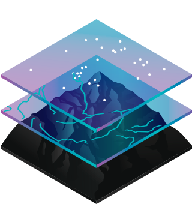

CBS Nasıl Çalışır?
CBS teknolojisi, coğrafya bilimlerini anlamak ve diğer verilerle işbirliği sağlamak için araçlar kullanır.
Her türlü veriyle birlikte harekete geçirilebilir ve farklı platformlar ile entegre olabilir.

Haritalar
CBS kullanarak yaratılmış haritalar kolayca yönetilebilir, paylaşılabilir, uygulama üretilerek herkes için her an her yerden kullanılabilir hale getirilebilir.

Veriler
CBS, konumsal bilgileri kullanarak birden fazla veri katmanını birleştirebilir. Verilerin coğrafi bileşenlerini kullanarak doğruluğu kesin bilgiler üretir. CBS verileri; fotoğraflar, detaylar, altlık haritalar ve tabloları içerir.

Analizler
Mekansal analizlerle mevcut durumunuzun uygunluğunu ve kabiliyet yeteneğini belirleyebilir, muhtemel olaylar için tahminler yapabilirsiniz. Bu şekilde anlama ve yorumlamalarla yeni karar verme mekanizmaları geliştirebilir, olaylara farklı bakış açıları kazandırabilirsiniz.

Uygulamalar
Kullanıcı odaklı üretilen uygulamalar (apps) ile CBS’yi herkes için kullanılabilir hale getirebilirsiniz. Oluşturulan uygulamalar her an, her yerde; akıllı telefonlarda, tabletlerde, masa üstünde ve web tarayıcılarda kullanılabilir.